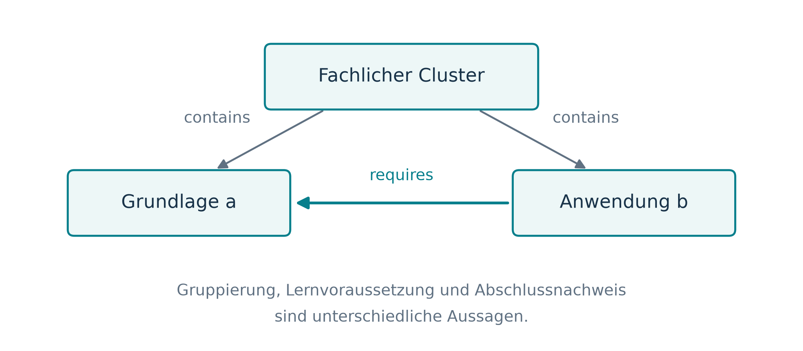
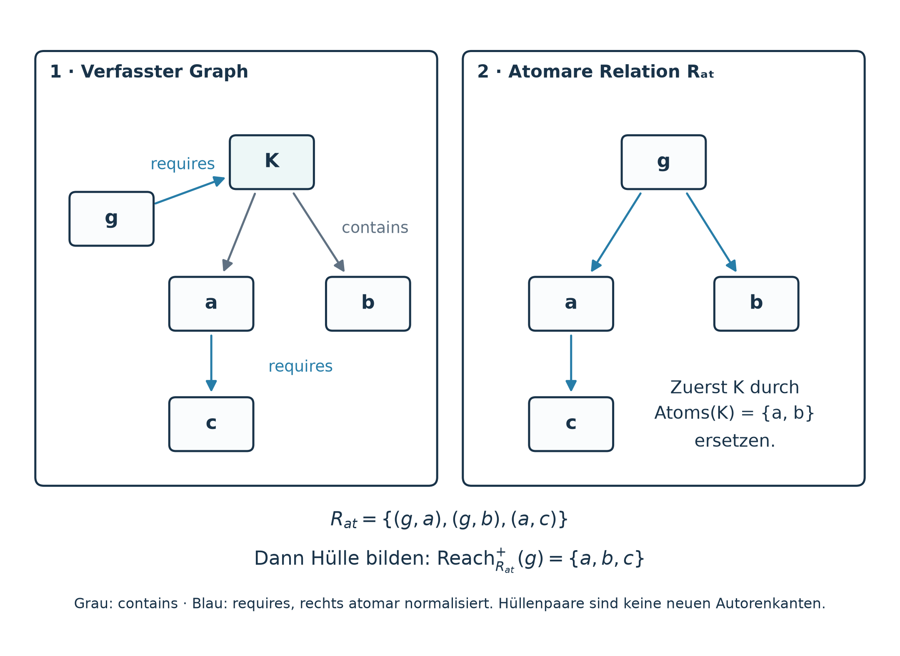
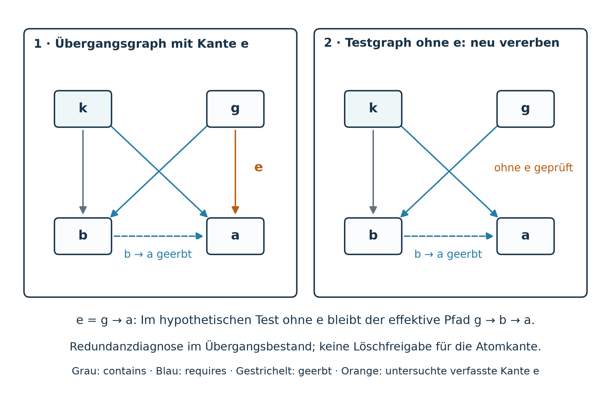

Die Graph-Definition von SkillPilot — Formaler Kern (§§1–5)
Generated artifact. Do not edit manually.
Generated by:
docs/concept/skill-graph/build_spec.pyRegenerate with:cd app && npm run docs:skill-graph:webSource of truth:docs/concept/skill-graph/source/
Sprache / Language: Deutsch (DE) · English (EN) | PDF: Deutsches PDF · English PDF
Kompendium: §§1–5 Kern · §§6–10 Kontext · §§11.1–11.4 Lerneinheiten · §11.5 Einheitsfolge · §12 Planung · §13 Implizite Beherrschung · Anhänge B–F · Anhang A (Regeln & Ampel)

Geltung dieser Fassung
Deutsche Gesamtdarstellung, Stand 11. November 2026. SkillPilot beschreibt Lernziele und ihre Beziehungen: contains gliedert Ziele, requires benennt fachliche Voraussetzungen. Vom kanonischen Zielbestand über das Personal Curriculum bis zum aktuellen Fokus und den gespeicherten Ergebnissen bleiben die Zielidentitäten erhalten. Lerneinheiten verbinden ein Lernversprechen mit eigenen Zielen und Kindeinheiten; Zeitpläne ordnen deren Erwerb verfügbarem Kalender und Budget zu. Ausdrücklich festgestelltes Verstehen und durch gültige lokale Prüfungen belegte selbstständige Anwendung zählen beide zur effektiv beherrschten Zielmenge.
Geltung und Umsetzung. Die atomare Normalform \(R\subseteq A\times A\) und ihre vollständige deterministische Prüfung im aktuellen Bestand vor jedem Meilensteinpass sind verbindlich. Die Ownerentscheidung vom 12. November 2026 ersetzt die frühere Migrationsreihenfolge und Erhaltungspflicht durch diese Zielzustandsprüfung. Anhang A ordnet die Regeln ihren Prüfgebieten zu, macht die tatsächlich harte Durchsetzung per Ampelschaltung sichtbar und grenzt vorhandene Gates ab. Die neue globale Anwendungsanerkennung ist auf der geprüften Hauptlinie noch nicht implementiert; Anhang B beschreibt den Unterschied zum bisherigen Modell. Der Abschluss einer Lerneinheit wird aus eigenen Pflichten und Kindern abgeleitet, ohne eine zusätzliche Mastery-Stufe zu speichern.
Leserführung und Geltungsbereich
Ein Skill-Graph in SkillPilot beschreibt, was gelernt werden kann und welche Voraussetzungen dabei gelten. Darauf bauen vier weitere Aussagen auf, die das Modell bewusst getrennt hält:
- Curriculare Sichten bestimmen, welche dieser stabilen Ziele für eine Person gelten und wo sie in einem Bildungsgang stehen.
- Der Lernzustand hält für jedes atomare Ziel fest, ob es geschafft ist.
- Lerneinheiten erklären den fachlichen Zusammenhang vom überschaubaren Thema bis zum größeren Fachgebiet. Ihr Abschluss wird rekursiv aus Kindern und eigenen Pflichten abgeleitet, nicht pauschal gespeichert.
- Die Planung verteilt Erwerb und Übung auf verfügbare Zeit.
Die Ableitung impliziter Beherrschung verbindet ausdrückliche Ergebnisse, transitive Voraussetzungen und fachlich geprüfte lokale Verträge der Lerneinheiten. Alle diese Aussagen dürfen sich aufeinander beziehen, aber nicht stillschweigend gegenseitig ersetzen.
Diese Referenz ist für die deutschsprachige gemeinsame Prüfung und Weiterentwicklung des Modells bestimmt. Sie behandelt die Graph-Definition im weiteren Sinne: Identität, Kanten, Vererbung, Gültigkeit, Verfügbarkeit, Projektion, Zieltypen, Fortschritt, Zeitplanung, Abschluss, Quellen und Qualitätssicherung. Fachliche Lehrplaninhalte und konkrete Aufgabenbestände werden nicht vollständig abgedruckt. Die Beispiele sind Veranschaulichungen, keine als Curriculum freigegebenen Teilgraphen.
Das Modell in sieben Schritten
Die Schritte nehmen den Gedankengang des Dokuments vorweg. Die englischen Zielnamen stammen aus dem Mechanik-Beispiel der englischen Originalabbildungen, erstmals in Abbildung 1.
- Ziele und zwei Kantenarten. Ein Lernziel hat eine stabile Identität.
containsgliedert: Kinematics enthält Velocity.requiresnennt fachliche Voraussetzungen: Velocity setzt Vectors voraus. Gliederung allein begründet keine Voraussetzung (Abschnitte 1 und 2). - Atome und Cluster. Ziele ohne Kinder sind atomar; nur für sie wird ein Ergebnis gespeichert. Cluster gliedern. Im Zielzustand verbindet jede verfasste Anforderung ein Atom mit einem Atom, und keine ist überflüssig. Ältere Anforderungen an oder von Clustern bleiben als Übergangsbestand lesbar (Abschnitte 2 und 3).
- Lernzustand und Frontier. Je atomarem Ziel gibt es genau ein gespeichertes binäres Ergebnis. Als Nächstes verfügbar – in der Frontier – ist ein offenes Atom erst, wenn alle Atome beherrscht sind, die es direkt oder über Ketten voraussetzt (Abschnitt 4).
- Ausschnitte. Das Personal Curriculum legt den längerfristigen persönlichen Umfang fest, der Fokus den vorübergehenden Arbeitsbereich. Abgeleitet wird stets im ganzen Graphen und erst danach eingeschränkt. Der Normalmodus prüft die Voraussetzungen innerhalb des Ausschnitts, der strikte Modus alle (Abschnitte 5 bis 7).
- Zieltypen. Der Zieltyp bestimmt, wann ein Ziel als geschafft gilt: ein Inhaltsziel durch festgestelltes Verstehen, ein Orientierungsziel durch den abgeschlossenen Einstieg, ein Memorierziel durch verifizierten Abruf, ein Prüfungsziel durch die bestandene Prüfung (Abschnitt 8).
- Lerneinheiten. Eine Lerneinheit verbindet ein Lernversprechen mit eigenen Zielen und Kindeinheiten. Ihr Abschluss wird aus diesen Pflichten abgeleitet und nicht zusätzlich gespeichert (Abschnitt 11).
- Implizite Beherrschung. Sobald keine offene Prüfung und kein offenes Memorierziel einer Lerneinheit ein eigenes Inhaltsziel mehr benötigt, gilt dieses Ziel als selbstständig angewandt – vorausgesetzt, der lokale Vertrag der Einheit ist fachlich geprüft und gültig. Ausdrücklich festgestelltes Verstehen und so belegte Anwendung bilden zusammen die effektiv beherrschte Menge; beide erfüllen spätere Voraussetzungen und zählen zum Fortschritt (Abschnitt 13).
Aufbau, Status und Regelkennungen
Jeder Teil beantwortet eine Leitfrage und hat einen eigenen Status. Die letzte Spalte nennt die Kennungen, unter denen Anhang A die Regeln des Teils führt, etwa GD-C07 für eine Regel des formalen Kerns.
| Abschnitte | Leitfrage | Status | Regeln |
|---|---|---|---|
| 1–5: Formaler Kern | Was kann gelernt werden, was setzt es voraus, und was ist als Nächstes verfügbar – im ganzen Graphen und in einem Ausschnitt? | Normativer Kern | GD-C |
| 6–10: Kontext, Sichten, Zieltypen, Qualität | Wo steht ein Ziel in einem Bildungsgang, was gehört zum persönlichen Umfang, wann gilt ein Ziel als geschafft, und woher stammt es? | Angrenzender Vertrag | GD-X |
| 11: Lerneinheiten | Welche Ziele bilden ein fachliches Ganzes, und wann ist es abgeschlossen? | Fachliche Struktur | GD-U |
| 12: Erwerbs- und Zeitplanung | Lässt sich der Erwerb in eine Reihenfolge und ein Zeitbudget einpassen? | Optionales Profil | GD-P |
| 13: Implizite Beherrschung | Wann belegt eine bestandene Prüfung auch die Ziele, auf denen sie aufbaut? | Verbindliches Konzept, noch nicht implementiert | GD-A |
| Anhänge A–F | Wie wird welche Regel geprüft, wo weicht die Implementierung ab, und was bedeuten Begriffe und Symbole? | Nachschlageteil | GD-D |
| Status | Bedeutung in dieser Referenz |
|---|---|
| Normativer Kern | Verbindliche mathematische Graphsemantik aus graph-definition.md; zusätzliche Profile können strengere Regeln setzen. |
| Angrenzender Vertrag | Semantik von Projektion, Zieltypen, Quellen oder Lernablauf; der Implementierungsstand ist jeweils gesondert zu prüfen. |
| Fachliche Struktur | Rekursive Lerneinheiten mit Lernversprechen, eigenen Zielen und abgeleitetem Abschluss; in der Platzierungsschicht der Skill-Landschaft dargestellt und validiert (Abschnitt 11.2), aber keine behauptete Laufzeitfunktion. |
| Optionales Profil | Zeit- und Budgetplanung sowie bedingte Zugänge zu Lerneinheiten; harte Sperren und der direkte Prüfungszugang sind dafür noch nicht entschieden. |
| Noch nicht implementiert | Die neue Anerkennung impliziter Beherrschung ist verbindlich beschrieben, aber nicht umgesetzt; der bestehende Code folgt einem abweichenden Bedarfsmodell (Anhang B). |
Wer Curricula verfasst, braucht vor allem die Abschnitte 1 bis 3, 8 und 10. Für die Laufzeitlogik sind die Abschnitte 4, 5, 7 und 13 maßgeblich, für Qualitätssicherung und Review zusätzlich die Anhänge A bis C. Die Abschnitte 11 und 12 richten sich an alle, die Kurse gliedern und planen.
Lesekonventionen
Verbindlichkeit. „Muss“, „darf nicht“ und „verbindlich“ kennzeichnen Regeln des Modells. „Noch nicht implementiert“ heißt: verbindlich beschrieben, aber in der Laufzeit nicht umgesetzt. „Optional“ kennzeichnet ein Zusatzprofil, „offen“ oder „noch nicht entschieden“ eine bewusst unentschiedene Frage.
Schreibweisen. Kursive Großbuchstaben bezeichnen Mengen und Relationen (\(G\), \(A\), \(R\), \(M\)), kursive Kleinbuchstaben beliebige Ziele (\(g\), \(p\), \(a\)). Konkrete Beispielknoten einer Abbildung stehen aufrecht und serifenlos, genau wie im Bild beschriftet: In der Kette \(\nd{Q}\to\nd{B}\to\nd{A}\) ist \(\nd{A}\) ein einzelnes Ziel, nicht die Menge \(A\) der atomaren Ziele. Ausgeschriebene Beispielnamen wie Velocity sind kursiv gesetzt. Pfeile zeigen stets in Richtung der Relation, also vom Cluster zum Kind und vom Ziel zu seiner Voraussetzung. Schreibmaschinenschrift kennzeichnet Feld- und Bezeichnernamen wie requires. Die sieben englisch beschrifteten Abbildungen 1 bis 9 sind unveränderte Originale der Quellspezifikation; die Bildunterschriften erläutern ihre Beschriftungen.
Begriffe. Die folgenden Begriffe werden leicht verwechselt und deshalb durchgehend in genau dieser Bedeutung verwendet. Anhang D enthält das vollständige Verzeichnis der Begriffe und Symbole.
| Begriffe | Bedeutung in diesem Dokument |
|---|---|
| Anforderung, Voraussetzung | Die Kante \((g,p)\in R\) ist eine Anforderung von \(g\); das Ziel \(p\) ist eine Voraussetzung von \(g\). |
| verfasst, abgeleitet | Verfasst sind nur die gespeicherten contains- und requires-Kanten. Geerbte, effektive und atomar normalisierte Anforderungen sowie Hüllen werden daraus abgeleitet. |
| Zielzustand, Übergangsbestand | Zielzustand heißt der angestrebte Zustand der kanonischen Daten: atomare Normalform und transitive Minimalität. Übergangsbestand sind heutige Daten, die noch Clusteranforderungen enthalten. Der Lernstand eines einzelnen Ziels ist damit nie gemeint. |
| Mastery, implizite Beherrschung, effektiv beherrscht | Mastery ist das gespeicherte ausdrückliche Ergebnis (Menge \(M\)). Implizite Beherrschung wird abgeleitet (Menge \(I_U\)). Effektiv beherrscht ist die Vereinigung beider (Menge \(\Meff\)). |
| Inhaltsziel, geschütztes Ziel | Inhaltsziel heißt das gewöhnliche fachliche Lernziel; Abbildungen beschriften es mit „gewöhnlich“. Geschützt sind Prüfungs- und Memorierziele: Sie werden nie implizit bestanden. |
| Cluster, Lerneinheit, Programmeinheit | Ein Cluster ist ein Ziel mit contains-Kindern. Eine Lerneinheit ist eine eigens autorisierte fachliche Einheit mit Lernversprechen. Eine Programmeinheit ist ein organisatorischer Abschnitt wie Jahrgang oder Semester; eine Lerneinheit wird im selben Feld programUnits mit der Art learningUnit deklariert. |
| Stufe | Personalisierungsstufe (Level 1–4), Reifegrad der Curriculum-QA (M0–M7), Planungsstufe eines Zeitplans, Schulstufe und das Schwierigkeitsfeld level sind fünf verschiedene Dinge. |
Quellen und Grenzen der Aussagen
Die fachlichen Verträge im Repository bleiben die maßgeblichen Einzelquellen. Anhang E ordnet alle Kapitel diesen Quellen zu. Anhang B stellt die datierten Entscheidungen des Product Owners zusammen, auf die der Text verweist, und nennt die beim Erstellen überprüften Implementierungsabweichungen. Mathematische Beispiele, Bildunterschriften und Plausibilitätsprüfungen ersetzen weder fachliche Aufgabenreviews noch Untersuchungen mit Lernenden.
1. Ziele, Identität und Beziehungen
Die Abschnitte 1 bis 5 bilden den formalen Kern. Dieser Abschnitt führt Ziele und die beiden verfassten Kantenarten ein. Abschnitt 2 leitet daraus die Relationen ab, mit denen gerechnet wird, Abschnitt 3 nennt die Gültigkeitsbedingungen. Abschnitt 4 beschreibt den Lernzustand einer Person und Abschnitt 5 die Auswertung in einem Ausschnitt des Graphen.
1.1. Das Grundobjekt
Der normative Kern ist ein endlicher gerichteter Graph
\(G\) ist die Menge der Lernziele. \(C\) steht für contains: Ein Ziel enthält ein anderes. \(R\) steht für requires: Ein Ziel setzt ein anderes voraus. Es gibt genau diese beiden ausdrücklich verfassten Kantenarten im Skill-Graphen; nur sie werden von Autorinnen und Autoren gespeichert. Abgeleitete Relationen, curriculare Platzierungen, Quellenzuordnungen und Nachweise sind andere Modellschichten.
Ein Paar \((x,y)\) ist gerichtet. Für jede Relation \(X\) auf \(G\) bezeichnet
die Umkehrrelation und \(X^+\) die transitive Hülle: \((x,y)\in X^+\) gilt genau dann, wenn ein gerichteter \(X\)-Pfad mit mindestens einer Kante von \(x\) nach \(y\) führt. Pfade der Länge null zählen nicht. Eine Relation \(X\) heißt azyklisch, wenn kein Ziel über einen solchen Pfad zu sich selbst zurückführt, also \(\forall g\in G:(g,g)\notin X^+\) gilt. Ein gerichteter azyklischer Graph heißt kurz DAG. Die Vereinigung \(C\cup R\) ist nicht die Relation, an der pauschal alle DAG-Bedingungen geprüft werden: Beide Kantenarten haben verschiedene Bedeutungen. Abschnitt 3 nennt die Relationen, die azyklisch sein müssen.
Abbildung 1 zeigt beide Kantenarten an einem Beispiel.
Die Pfeilrichtung ist Teil der Definition
\(k\xrightarrow{\mathtt{contains}}c\): Der Cluster \(k\) enthält das Ziel \(c\). \(g\xrightarrow{\mathtt{requires}}p\): Das Ziel \(g\) setzt \(p\) voraus; kurz: \(g\) benötigt \(p\). Eine Lernablaufdarstellung zeigt dagegen \(R^{-1}\): von der Voraussetzung zur darauf aufbauenden Kompetenz. Diese Umkehrung muss beschriftet sein.

Abbildung 1 — Ziele und zwei Kantenarten: Zwei Beziehungen in einem Graphen. Graue Pfeile gliedern (contains), blaue zeigen auf Voraussetzungen (requires). Velocity benötigt Vectors; Newton's Second Law benötigt sowohl Forces als auch Acceleration. Die Farben der Knoten sind hier keine Lernzustände. Dieses Mechanik-Beispiel kehrt in den englischen Originalabbildungen bis Abbildung 9 wieder.
1.2. Attribute und stabile Identität
Jedes Ziel trägt drei normative Basisattribute. Sie sind totale Abbildungen, also für jedes Ziel definiert:
\(\Id\) ist injektiv: Verschiedene Ziele haben verschiedene IDs. Die UUID bleibt über Platzierungen, Sprachfassungen und Ansichten hinweg die kanonische Identität. Kurze Buchstaben in diesem Dokument sind nur mathematische Bezeichner, keine Aussage zum serialisierten ID-Format.
Zwei weitere Attribute sind Teilabbildungen (\(\rightharpoonup\)), also nicht für jedes Ziel definiert. Ein optionaler \(\ShortKey:G\rightharpoonup\Sigma^*\) ist innerhalb einer logischen Skill-Landschaft eindeutig, also innerhalb des zusammengehörigen Zielbestands eines Curriculums. Mehrere Sprachdateien desselben Ziels dürfen dasselbe Paar aus ID und ShortKey wiederholen. Die Teilabbildung \(\PhaseCompat:G\rightharpoonup P_{\mathrm{compat}}\) beschreibt dagegen Kompatibilitäts- oder Anzeigemetadaten, häufig im Feld phase. Sie definiert weder kanonische Identität noch die fachliche Lernreihenfolge. Weitere gebräuchliche Felder ordnet Tabelle 1 ein.
Tabelle 1: Ergänzende Zielattribute und ihre begrenzte Bedeutung.
| Feld | Fachliche Bedeutung außerhalb des minimalen Kerns |
|---|---|
description |
Verständlicher, überprüfbarer Zieltext; typischerweise „Die lernende Person kann …“. Orientierungsziele haben eine eigene Semantik (Abschnitt 8). |
area, tags |
Fachliche Einordnung und Metadaten; ein Tag ersetzt keine autoritative Entscheidung über Zieltyp oder Geltungsbereich. |
level |
Schwierigkeit beziehungsweise Anforderungsbereich; keine fachliche Lerneinheit und keine Personalisierungsstufe. |
core |
Kernziel versus Erweiterung im jeweiligen Vertrag; eine Erweiterung kann im gewählten Profil trotzdem verbindliches Ziel sein. |
weight |
Anteil bei Fortschrittsaggregation; keine Zeitdauer, keine fachliche Nachweisstärke und keine Bestehenswahrscheinlichkeit. |
examples |
Referenzen auf Beispiele oder Aufgaben; Vorhandensein beweist keine Aufgabenqualität oder Kompetenzbeherrschung. |
resourceLinks |
Bestehendes Referenzfeld unter anderem für eigene Visualisierungen, offizielle Quellen und Altlinks. Neue optionale externe Lernmaterialien gehören nach aktuellem Vertrag in getrennte Inhaltspakete. |
1.3. Atomare Ziele und Cluster
Die strukturelle Klassifikation folgt allein aus \(C\):
Ein Ziel ohne contains-Kinder ist atomar (ein Atom, ein Blatt); jedes andere Ziel ist ein Cluster. Ein Ziel kann mehrere Eltern haben: Der kanonische contains-Graph darf eine Polyhierarchie sein. Explizite Metadaten zur Klassifikation müssen dazu passen.
Strukturelle Atomarität bedeutet nicht automatisch semantische Atomarität. Ein Blatt mit fünf unabhängigen Teilkompetenzen bleibt formal ein Blatt, kann jedoch die Qualitätsprüfung verfehlen.
Neben dem Strukturtyp hat ein atomares Ziel einen pädagogischen Zieltyp. Der Normalfall ist das Inhaltsziel; Orientierung, Memorierung und Prüfungen sind besondere pädagogische Arten:
- Ein Inhaltsziel, das gewöhnliche fachliche Lernziel, beschreibt fachliches Verstehen oder Können.
- Ein Orientierungsziel beschreibt den motivierenden Einstieg.
- Ein Memorierziel beschreibt den kontrollierten Abruf erforderlicher Karten.
- Ein Prüfungsziel beschreibt eine bewertete Aufgabe mit eigenem Bestehenskriterium.
Abschnitt 8 erläutert, wann ein Ziel des jeweiligen Typs als geschafft gilt. Diese Arten sind keine zusätzlichen Strukturtypen und keine Programmabschnitte.
2. Containment, Voraussetzungen und Vererbung
Aus den beiden verfassten Kantenarten entstehen die Relationen, mit denen Verfügbarkeit, Fortschritt und Abschluss berechnet werden. Tabelle 2 gibt die Übersicht; die folgenden Unterabschnitte definieren ihre Einträge der Reihe nach.
Tabelle 2: Verfasste und abgeleitete Relationen. Im Zielzustand gilt \(R=R_A=\Reff=\Rat\); abgeleitet wird dann nur noch die Hülle \(\Rat^+\).
| Symbol | Name | Entstehung und Verwendung |
|---|---|---|
| \(C\) | Containment | Verfasste contains-Kanten. Sie gliedern die Ziele und bestimmen Atome, Cluster und atomare Basis. |
| \(R\) | verfasste (direkte) Anforderungen | Gespeicherte requires-Kanten. Im Zielzustand verbinden sie nur Atome. |
| \(\Reff\) | effektive Anforderungen | \(R\) zusammen mit den Anforderungen, die ein Ziel von seinen contains-Vorfahren erbt. |
| \(\Rat\) | atomar normalisierte Anforderungen | Jede effektive Voraussetzung ist durch ihre atomare Basis ersetzt; es bleiben nur Paare von Atomen. |
| \(\Rat^+\) | transitive Hülle | Alle über Ketten erreichbaren Voraussetzungen. Grundlage von Bedarf, Frontier und impliziter Beherrschung. |
| \(R_A\) | direkt atomar verfasste Anforderungen | \(R\cap(A\times A)\); Grundlage der Routenprüfung in Abschnitt 3.3. |
2.1. Hierarchie und atomare Basis
Für den endlichen azyklischen Containment-Graphen gelten
\(\Anc(g)\) enthält die Vorfahren von \(g\), \(\Desc(g)\) seine Nachfahren und \(\Atoms(g)\) seine atomare Basis. Jeder Vorfahr hat Kinder und ist deshalb ein Cluster. Die Kurzformen \(\Anc\) und \(\Desc\) entsprechen den Bezeichnern Ancestors und Descendants der ursprünglichen Spezifikation und ihrer Abbildungen.
Jeder Cluster besitzt mindestens ein atomares Blatt: In einem endlichen azyklischen Graphen endet jeder absteigende Pfad nach endlich vielen Schritten bei einem Ziel ohne Kinder. Deshalb ist \(\Atoms(g)\) für jedes Ziel nichtleer. Ein Knoten ohne Kinder ist atomar, kein leerer Cluster. Bei mehreren Pfaden zählt ein Atom in der Menge nur einmal. Abbildung 2 zeigt direkte und indirekte Zugehörigkeit.

Abbildung 2 — Direkte und indirekte Zugehörigkeit: Direkte und indirekte Zugehörigkeit. Der türkis hervorgehobene Pfad besteht aus zwei vorhandenen contains-Kanten; er ist keine dritte Kantenart. Mechanics ist deshalb auch Vorfahr von Velocity.
2.2. Direkte Anforderungen sind konjunktiv
\((g,p)\in R\) bedeutet: \(g\) setzt \(p\) voraus. Die Kante heißt eine Anforderung von \(g\), das Ziel \(p\) eine Voraussetzung von \(g\). Mehrere ausgehende Kanten bedeuten alle Voraussetzungen, keine Auswahl. Alternativen brauchen einen eigenen Auswahlvertrag außerhalb dieser Relation. Die Relation \(R\) muss azyklisch sein. Abbildung 3 zeigt vier direkte Anforderungen.
Nach der verbindlichen Entscheidung vom 8. November 2026 gilt im kanonischen Zielzustand
Diese Eigenschaft heißt atomare Normalform: Alle verfassten Anforderungen haben atomare Quell- und Voraussetzungsziele. Auch eine universelle Clusteranforderung, die für alle Nachfahren eines Clusters gelten soll, ist keine bleibende Ausnahme. Cluster dienen der Gliederung und abgeleiteten Übersicht.
Daten, die noch Anforderungen von oder an Cluster enthalten, heißen in diesem Dokument Übergangsbestand. Bestehende Clusteranforderungen behalten im Übergang ihre Lesesemantik: Eine am Cluster verfasste Anforderung gilt durch Vererbung für alle Nachfahren; ein Cluster als Voraussetzung wird in seine Atome expandiert (Abschnitt 2.3). Diese Kompatibilität erfüllt noch nicht den kanonischen Zielzustand.

Abbildung 3 — Direkte Voraussetzungen: Direkte Voraussetzungen. Auch der gebogene Pfeil ist eine direkte Kante. Die Kette von Acceleration über Velocity zu Vectors ergibt transitive Erreichbarkeit, keine Containment-Vererbung.
2.3. Effektive Anforderungen
Damit auch der Übergangsbestand eindeutig gelesen wird, bereiten drei Schritte die verfassten Anforderungen auf: erst vererben, dann atomar expandieren, dann die transitive Hülle bilden. Diese Reihenfolge gilt überall, wo dieses Dokument mit Voraussetzungen rechnet.
Schritt 1: Vererben.
Die effektive Relation liest auch bestehende Clusteranforderungen. Sie entsteht aus eigenen und von Vorfahren geerbten direkten Anforderungen:
Dabei sind
Mehrere Elternpfade addieren Anforderungen als Mengenvereinigung, ohne Mehrfachzählung. Vererbung in (2) und transitive Hülle \(\Reff^+\) sind verschiedene Operationen: Vererbung überträgt die Anforderungen der Vorfahren entlang von contains auf die Nachfahren; die Hülle folgt Ketten von Anforderungen. Abbildung 4 zeigt eine geerbte Anforderung.

Abbildung 4 — Vom Cluster geerbte Anforderungen: Beispiel aus dem Übergangsbestand: eine vererbte Clusteranforderung. Vectors liegt in diesem Beispiel außerhalb von Kinematics. Wäre es auch darin enthalten, erbte es die Anforderung an sich selbst. Durchgezogen heißt direkt verfasst, gestrichelt heißt geerbt.
Schritt 2: Atomar expandieren.
Für die Laufzeit wird zuerst auf Atome normalisiert. Jede effektive Voraussetzung wird durch ihre atomare Basis ersetzt:
Schritt 3: Hülle bilden.
Die transitive Hülle \(\Rat^+\) enthält damit auch Pfade, die nach der Expansion einer Clusteranforderung weiterführen. Mastery eines Zwischenziels unterbricht diese Hülle nicht. Auch in Abschnitt 13 bleibt \(\Rat\) die Bezeichnung dieser normalisierten Relation; \(R\) bezeichnet weiterhin die verfassten Kanten.
Abbildung 5 zeigt die Schritte 2 und 3 an einer Clusteranforderung. Die externe Grundlage \(\nd{c}\) bleibt nach der Expansion von \(\nd{K}\) über \(\nd{a}\) erreichbar.

Abbildung 5 — Atomare Expansion vor der Hüllenbildung: Aus \(\nd{g}\to\nd{K}\) und \(\Atoms(\nd{K})=\{\nd{a},\nd{b}\}\) entstehen die atomaren Paare \((\nd{g},\nd{a})\) und \((\nd{g},\nd{b})\). Weil außerdem \(\nd{a}\to\nd{c}\) gilt, enthält die erst danach gebildete Hülle auch \((\nd{g},\nd{c})\). Der Beispielknoten \(\nd{K}\) ist ein einzelner Cluster, nicht die Menge \(K\) aller Cluster. Die rechte Darstellung zeigt die abgeleitete atomare Relation, keine zusätzlich verfassten Autorenkanten.
Der atomare Bedarf eines Ziels.
Mehrere spätere Formeln fragen dasselbe: Welche Atome setzt ein Ziel insgesamt voraus? Für ein beliebiges Ziel \(g\) seien
\(\ReqAtoms(g)\) heißt der atomare Bedarf von \(g\) (in älteren Fassungen \(D(g)\)). Für ein Atom \(g\) ist \(\ReqAtoms(g)=\{b\in A\mid(g,b)\in\Rat^+\}\). Für einen Cluster beschreibt der Bedarf dessen eigene und geerbte Anforderungen, ohne die eigenen Kinder als zusätzliche Voraussetzungen zu behandeln. Der Bedarf hängt nur vom Graphen ab, nicht vom Lernzustand. In Abbildung 5 ist \(\ReqAtoms(\nd{g})=\{\nd{a},\nd{b},\nd{c}\}\).
Im vollständig atomar verfassten Zielzustand gilt \(\Reff=R=\Rat\): Containment-Vorfahren sind Cluster und tragen dann keine ausgehenden Anforderungen. Transitive Ketten bleiben als Graphstruktur relevant.
3. Gültigkeit, Minimalität und Lernbarkeit
3.1. Verbindliche Bedingungen
Ein vollständiger Graph erfüllt den kanonischen Zielzustand genau dann, wenn neben den Attribut- und Identitätsbedingungen aus Abschnitt 1 auch die atomare Normalform (1), die Azyklizität und die atomare transitive Minimalität gelten:
Bedingung (4) verlangt, dass keine der vier Relationen ein Ziel auf sich selbst zurückführt. Bedingung (5) verlangt, dass keine verfasste Anforderung über die übrigen bereits erreichbar ist. Identitäten und Referenzen müssen auflösbar sein; unbekannte Knoten sind keine erfüllten Voraussetzungen.
Zur Azyklizität.
Die DAG-Bedingung für \(R\) folgt bereits aus derjenigen für \(\Reff\), weil \(R\subseteq\Reff\). Sie bleibt als verständliche eigenständige Autorenprüfung aufgeführt. Unabhängig davon bleibt die Azyklizität von \(C\) erforderlich. Direkte Azyklizität allein genügt nicht, weil Vererbung einen Zyklus erzeugen kann (Abbildung 6). Ebenso bleibt ein durch atomare Expansion entstehender Selbstzyklus ein Modellfehler, auch wenn die unexpandierten Kanten azyklisch aussehen.

Abbildung 6 — Effektive Zyklen durch Vererbung: Direkte Azyklizität genügt nicht. Der Cluster \(\nd{A}\) enthält \(\nd{B}\) und benötigt \(\nd{X}\); daraus folgt die geerbte Kante \(\nd{B}\to\nd{X}\). Kommt \(\nd{X}\to\nd{B}\) hinzu, entsteht der effektive Zyklus \(\nd{B}\to\nd{X}\to\nd{B}\). Der Beispielknoten \(\nd{A}\) ist hier ein Cluster, nicht die Menge \(A\) der atomaren Ziele.
Zur transitiven Minimalität.
In der atomaren Kette \(\nd{Q}\to\nd{B}\to\nd{A}\) ist eine zusätzliche Kante \(\nd{Q}\to\nd{A}\) redundant und zu entfernen. Die verbleibende Hülle fordert \(\nd{A}\) weiterhin, auch wenn \(\nd{B}\) bereits gemeistert ist. Transitive Paare werden nicht als zusätzliche Direktkanten gespeichert. Die verbindliche transitive Minimalität vom 4. November 2026 bleibt bestehen; die Entscheidung vom 8. November 2026 legt die atomare Normalform als Zielzustand fest. Die Ownerentscheidung vom 12. November 2026 verlangt dessen vollständige deterministische Prüfung im aktuellen Bestand und hebt die frühere Migrationsreihenfolge und Erhaltungspflicht auf.
Die interne Prüfbezeichnung G17 steht hier für die vollständige atomare Normalform und die vollständige transitive Minimalitätsprüfung des deklarierten kanonischen Fachbestands. Sie umfasst den nötigen fachfremden Voraussetzungsbestand und vererbende Vorfahren; ein Teilscan oder ein einzelnes Routenprofil genügt dafür nicht.
Vollständige Zielzustandsprüfung in der Meilensteinprüfung.
Nach der Ownerentscheidung vom 12. November 2026 entscheidet der aktuelle Bestand über die Abnahme. Vor jedem Fach-Meilensteinpass M1–M7 muss die vollständige deterministische Prüfung des deklarierten kanonischen Fachbestands erfolgreich sein. Dazu gehören alle nötigen fachfremden Voraussetzungen und vererbenden Vorfahren; weder eine Stichprobe noch nur die im aktuellen Lernfokus sichtbaren Ziele genügen.
Die Prüfung verlangt aufgelöste Identitäten und Referenzen, Azyklizität, atomare Quell- und Zielknoten sämtlicher verfasster requires, konsistente explizite Typen sowie vollständige transitive Minimalität. Fehlende oder unvollständige Prüfungen gelten nicht als bestanden. Ein Verstoß setzt das Fach und seine Scope-Meilensteine auf M0; ein unvollständiger Katalog bricht den Statuslauf ab (GD-C17).
Eine bestimmte Folge von Bearbeitungsschritten oder die Gleichheit mit einer früheren Voraussetzungshülle, Projektion oder Frontier ist keine Abnahmebedingung mehr. Die aktuellen Scope-, Anwendbarkeits-, Zielmengen-, Frontier-, Abschluss- und Mastery-Regeln bleiben in ihren jeweiligen Prüfgebieten verbindlich; G17 allein beweist diese zusätzlichen Regeln nicht. Historische Reduktionsnachweise bleiben für diejenigen Reviewbindungen erhalten, die sie tatsächlich verwenden. Sie definieren nicht den aktuellen Prüfkatalog. Quellenbezug und Reviewfrische bleiben erforderlich; Graphänderungen schreiben keine Lernergebnisse.
Diagnosen im Übergangsbestand sind keine Löschanweisung.
Zwei ältere Prüfungen bleiben als Diagnose nützlich. Ihr Bestehen ersetzt weder die atomare Normalform noch die vollständige Zielzustandsprüfung.
Die frühere lokale Minimalitätsbedingung lautet
Sie zeigt direkte Dubletten geerbter Anforderungen. Das Entfernen einer Atomkante bei verbleibender Clusteranforderung stellt jedoch noch keinen gültigen Zielzustand her: Dort tragen Cluster keine ausgehenden Anforderungen mehr, und (6) gilt automatisch.
Der bisher unter G17 verwendete Entfernungstest ist ebenfalls eine Diagnose des Übergangsbestands: Er bildet für jede verfasste Kante \(e=(g,p)\) die Relation \(R'=R\setminus\{e\}\) und berechnet \(\Reff'\) mit unverändertem \(C\) neu. Er diagnostiziert Redundanz durch \((g,p)\in(\Reff')^+\). Abbildung 7 zeigt diesen mathematisch korrekten Befund im Übergangsbestand und zugleich den Gegenfall zur falschen Löschpräferenz: Der alternative Pfad hängt noch von einer Clusteranforderung ab.

Abbildung 7 — Übergangsdiagnose: geerbte Redundanz: Der Cluster \(\nd{k}\) enthält \(\nd{b}\) und benötigt \(\nd{a}\); deshalb erbt \(\nd{b}\) die Anforderung \(\nd{b}\to\nd{a}\). Entfernt man die verfasste Kante \(\nd{e}=(\nd{g},\nd{a})\), bleibt nach erneuter Vererbung der effektive Pfad \(\nd{g}\to\nd{b}\to\nd{a}\). Das ist eine Redundanzdiagnose des Übergangsgraphen, kein Auftrag, \(\nd{e}\) zugunsten von \(\nd{k}\to\nd{a}\) zu löschen. Zuerst ist die vollständige atomare Abdeckung von \(\nd{k}\to\nd{a}\) zu materialisieren, dann die Clusterkante zu entfernen; erst danach entscheidet ein vollständig atomarer Ersatzpfad über die Reduktion von \(\nd{e}\). Nur die geerbte Kante ist gestrichelt.
Was die heutigen Prüfungen belegen.
Seit dem 11. November 2026 führt CQR-001 im Statusgenerator den Entfernungsauditor für jede deklarierte Wurzel des vollständigen aktuellen kanonischen Gymnasialkatalogs aus, einschließlich der benötigten fachfremden Ziele und ihrer vererbenden Vorfahren. Neben Referenzen und effektivem DAG meldet er jede verfasste Anforderung mit nichtatomarem Quell- oder Voraussetzungsziel, jede redundante verfasste Anforderung und jeden widersprüchlichen expliziten Typ. Sobald die atomare Normalform gilt, fällt das Entfernungskriterium mit (5) zusammen; ein Bestehen belegt deshalb G17 für diese Wurzel. Ein Verstoß setzt das Fach auf M0 und sperrt damit jeden Meilensteinpass M1–M7. Das aktuelle Kataloginventar wird aus dem Curriculum-Manifest und den Fachdeklarationen der kanonischen Übersicht ermittelt und gegen das vollständige kanonische Verzeichnis geprüft. Der Generator bricht bei einem unvollständigen Katalog ab; historische Reduktionsnachweise bestimmen diesen Prüfumfang nicht. Der direkte CI-Befehl check:transitive-minimality prüft alle 21 kanonischen Wurzeln und scheitert bei Verstößen unabhängig von geschützten Floors; Wurzeln außerhalb des kanonischen Gymnasialkatalogs prüft CQR-001 nicht. Der direkte Befehl check:curriculum-maturity-floors prüft zusätzlich fest gebundene einzelne Fach-/Scope-Verpflichtungen gegen die mit --base-ref gewählte Git-Basis, statt nur der numerischen Reife zu vertrauen. Ein Bestehen belegt den aktuellen Zustand. Der Reduktionsnachweis dient ausschließlich der Wiederverwendung davon abhängiger Reviewevidenz. Er ist seit dem 12. November 2026 eingefroren: Sein Register hält je Ziel den geprüften Stand fest, ein unverändertes Ziel behält seine Reviews, und für ein geändertes Ziel gelten die strikten Prüfungen gegen die aktuellen Revieweingaben; veraltete Evidenz wird nicht angerechnet (Anhang A).
Die vorausgehende CQR/GVR-Basishärtung ist seit dem 13. November 2026 über PR #131 auf main. Der spätere Integrationsstand 2129b207f4 bestand nach den Folgeänderungen am eingefrorenen Reviewnachweis und der Mathematikprüfung alle 14 Jobs von CI #2315. Der Liefernachweis hält die getrennten PR- und Main-Läufe fest. Damit ist die technische Durchsetzung im jeweiligen Prüfumfang belegt; die vier fehlenden Sichtbarkeitsscopes von CQR-104 und die fachliche Erweiterung von GVR-012 bleiben offen. Diese QA-Evidenz belegt weder menschliche Erprobung noch die Umsetzung weitergehender Laufzeitverträge.
Aktueller Kandidat: Die Folgearbeiten stehen in PR #141 auf der aktualisierten Main-Basis 2ad03c810c und sind noch nicht auf main integriert. Die neue Bilanz 12 HART / 50 TEIL / 55 OFFEN / 28 OPT/DOK und GVR-012 mit vier direkt verpflichtenden Scopes im Inventar von zwölf beschreiben diesen lokal geprüften Kandidaten. Die lokale Evidenz steht im Folgearbeitsnachweis; abschließende Remote-CI und Main-Abnahme sind hier nicht als abgeschlossen ausgewiesen. Die historische CI #2315 gilt ausschließlich für ihren damaligen Stand.
Die Ownerentscheidung vom 13. November 2026 legt für die Einstufung aller GD-*-Regeln den kanonischen Gymnasialkatalog mit 21 Wurzeln fest. Pflichten ab M5, M6 oder M7 werden gegen ihre jeweilige Schwelle geprüft; aktuell sind zehn Fächer auf M6/M7 gebunden, davon fünf auf M7. Nichtkanonische Landschaften sind außerhalb dieses Arbeitsprogramms. Eine harte Einstufung verlangt weiterhin die vollständige Durchsetzung aller Teilpflichten der Zeile: offene Laufzeitverträge, semantische Routenlücken und allgemeine Prüfungsdeckung werden durch die Bereichsentscheidung nicht geschlossen.
Zwei Regelfamilien prüfen heute Teile des Zielzustands: das Curriculum-Quality-Review (CQR) und die graph-validation rollout rules (GVR). Neben CQR-001 heißt die Prüfung direkt atomarer Fachrouten CQR-102; die harte semantische Routenprüfung der Mathematikprofile Sek I/Sek II sowie von Biologie und Physik Sek II heißt GVR-012. Beide verlangen bereits in ihrem jeweiligen Scope, also ihrem benannten Prüfumfang, direkt atomare Routen; geerbte Clusterpfade liefern dort keinen Ersatz. Die Codelegende steht in Anhang A.2.
3.2. Zusatzprofile und Gegenbeispiele
Ein Baumprofil kann höchstens einen Elternknoten fordern:
Dies ist keine Grundbedingung der Polyhierarchie. Ebenso sind Anforderungen an eigene Vorfahren unerwünscht und in bestimmten Validatorprofilen verboten. Anforderungen an eigene Nachfahren erzeugen durch Vererbung sogar eine effektive Selbstabhängigkeit und scheitern bereits am DAG-Vertrag.
Ein DAG ist noch kein Beweis der Lernbarkeit
Als Gegenbeispiel aus dem Übergangsbestand seien \(G=\{k,a\}\), \(C=\{(k,a)\}\) und \(R=\{(a,k)\}\): Der Cluster \(k\) enthält das Atom \(a\), und \(a\) setzt \(k\) voraus. Die direkten und effektiven Relationen sind azyklisch und minimal. Aber \(\Atoms(k)=\{a\}\): Um \(a\) zu beginnen, müsste \(a\) schon erfüllt sein. Die globale Frontier aus leerem Lernzustand ist leer. Die Clusteranforderung verfehlt bereits die atomare Normalform. Außerdem enthält die vollständig atomar normalisierte Relation die Selbstabhängigkeit \((a,a)\) und verletzt damit die Azyklizität. Ein Abschlusszeuge (Abschnitt 12.2) würde denselben Fehler sichtbar machen.
Deshalb müssen drei Aussagen getrennt bleiben:
- Der Grundgraph ist gültig.
- Die gewählte Projektion ist gültig.
- Die Zielmenge ist aus einem deklarierten Eintrittszustand vollständig erlernbar.
Ein grüner einzelner Validator beweist nicht automatisch alle drei Aussagen.
3.3. Didaktische Routen von Orientierung zu Autonomie
Eine didaktische Route führt vom motivierenden Einstieg über das fachliche Lernen zur selbstständigen Leistung. Seien dazu \(O\subseteq A\) die Orientierungsanker (Motivationsanker), \(Z\subseteq A\) die terminalen Autonomieziele, also die Endziele selbstständiger Leistung, und \(E_{\mathrm{route}}\subseteq A\) explizit ausgenommene Unterstützungsziele. Die direkte atomare Relation sei \(R_A=R\cap(A\times A)\). Ohne Ausnahmeprofil gilt \(E_{\mathrm{route}}=\varnothing\); Ausnahmen benötigen einen dokumentierten, maschinenlesbaren Auswahlvertrag. Ein Atom \(a\in A\setminus E_{\mathrm{route}}\) ist routenabgedeckt, wenn
In Worten: Das Atom liegt auf mindestens einem Lernweg, der bei einem Orientierungsanker beginnt und bei einem terminalen Autonomieziel endet. Der Lernweg folgt \(R_A^{-1}\), also der Lernablaufrichtung von der Voraussetzung zum darauf aufbauenden Ziel.
Die Buchstaben \(O\) und \(Z\) (in älteren Fassungen \(M\) und \(T\)) vermeiden hier Verwechslungen mit der Mastery-Menge \(M\) sowie den Zielmengen \(T(U)\) und \(T_\pi\). Die Beschränkung auf \(R_A\) verhindert, dass ein Cluster als versteckter Zwischenknoten einen atomaren Routennachweis liefert. Diese Formel ist ein Strukturkriterium, kein Beweis didaktischer Angemessenheit.
Konkrete Routenprofile schränken zusätzlich die Schulstufe, erlaubte Zieltypen und die Reihenfolge ein: Orientierung am Einstieg, fachliches Lernen, bei Bedarf Unterstützung durch Memorierziele und eine selbstständige Leistung am Ende. Memorierziele werden dadurch nicht überall Pflicht. Die Profilregeln prüfen unterschiedliche Aussagen: vollständige Routen über effektive Voraussetzungen (CQR-101), direkt atomare Routen (CQR-102) und das Fehlen von requires an den selektierten Clustern (CQR-103). Der gemeinsame Auswerter von CQR-102 erzwingt direkt atomare Erreichbarkeit für alle zwölf deklarierten Profile. In vier der zwölf Profile (Mathematik Sek I/Sek II, Biologie und Physik Sek II) erzwingt GVR-012 zusätzlich den stärkeren semantischen Vertrag vollständiger Routen. Der gemeinsame semantische Routenbestand leitet sechs Kandidaten aus den QA-Profilen und vier vollständigen aktuellen Klassifikationsledgers ab. Physik Sek I und Chemie Sek II bleiben mit 5/3 Routenbefunden diagnostisch; für sechs weitere Scopes fehlt ein vollständiges aktuelles Ledger. Kein Befund wird durch eine neue Klassifikation oder eine schwächere Routenregel behoben. Ausgemusterte GVR-Kennungen bleiben reserviert und sind keine aktiven Sperren. Diese Profilprüfungen sind kein globaler Nachweis der atomaren Normalform für alle Fächer; CQR-001 und die direkte G17-Sperre umfassen den ausdrücklich begrenzten kanonischen Gymnasialkatalog mit 21 Wurzeln (Abschnitt 3.1).
Die gemeinsame Profilfactory ergänzt die bestehende Physik-Lane um bereits reviewte explizite goalEntry-Ziele aus den drei nationalen Stage-Sichten: Sek I von 96 auf 101, Sek II von 306 auf 316 fachliche Atome. Terminals, Graph, Sichten und Rollen bleiben unverändert. Der Audit weist separat 43 nur über Unterbäume geerbte Sek-II-Targets außerhalb dieser Lane aus; 42 haben in der breiteren Diagnose keine Terminalroute. Vier bestandene registrierte Scopes belegen daher keine vollständige Stage-Target-Abdeckung. Diese Abgleichslücke bleibt zusätzlich zu den acht Routenbefunden und sechs fehlenden Ledger-Scopes sichtbar.
Verbindliches Ausbauziel ab M7 (Ownerentscheidung vom 13. November 2026): GVR-012 wird künftig für alle registrierten QA-Scopes der jeweils M7-verpflichteten Fächer verlangt. Heute sind das sieben Scopes von fünf Fächern; vier sind abgesichert, drei haben offene Routen- oder Klassifikationsbefunde. Die vollständige M7-Pflicht wird erst nach deren evidenzbasiertem Abschluss aktiviert. Die fünf M6-Scopes bleiben im zwölfteiligen Inventar und werden beim späteren M7-Aufstieg verpflichtend. Bis zur vollständigen technischen Durchsetzung bleibt GVR-012 TEIL; vorhandene Pflichtscopes und Pins bleiben geschützt. 4/12 ist weiterhin die Inventarabdeckung, 4/7 die Abdeckung des heutigen M7-Ziels. Die vollständige zwölfteilige Diagnose ist keine M7-Aufstiegsprüfung; ihr Fehlerstatus bei fehlenden M6-Ledgers bleibt aussagekräftig. Ein späteres HART des Gates wertet breitere GD-Regeln nicht automatisch auf.
Eine Übersicht zwischen Clustern kann aus atomaren Routen abgeleitet werden. Beispielsweise bedeutet eine existenzielle Zusammenfassung \(k_2\to k_1\):
Eine prozentuale Abdeckung braucht darüber hinaus einen erklärten Nenner. Solche Übersichten erzeugen keine neuen direkten Clusteranforderungen.
4. Lernzustand, Erfüllung und Fortschritt
Die bisherigen Abschnitte beschreiben den Graphen ohne lernende Person. Dieser Abschnitt fügt ihren Lernzustand hinzu: was gespeichert wird, was daraus als effektiv beherrscht gilt, welche Ziele als Nächstes verfügbar sind und wie Fortschritt gezählt wird.
4.1. Erfüllung statt Rückschluss auf Voraussetzungen
Ausdrückliche Ergebnisse.
Es gibt genau einen gespeicherten binären Zustand \(m:A\to\{0,1\}\), mit \(M=\{a\in A\mid m(a)=1\}\). \(M\) ist die Menge der ausdrücklichen Erfolge, kurz: die ausdrückliche Mastery. Ein ausdrücklicher Erfolg an einem Inhaltsziel belegt zielgerecht geprüftes Verstehen. Orientierung, Memorierung und Prüfungen verwenden ihren jeweils eigenen Abschlussvertrag (Abschnitt 8). Keine Teilbewertung bildet einen dritten Mastery-Zustand.
Implizite Beherrschung im Vorgriff.
Die Abschnitte 11 und 13 führen Lerneinheiten und die Ableitung impliziter Beherrschung ein. Hier genügt ihr Ergebnis: Für jede Lerneinheit \(U\) mit einem für diese Person dauerhaft gültigen lokalen Vertrag wird die implizite Menge \(I_U\subseteq A\) abgeleitet. Der Vertrag bindet die eigenen Erwerbsziele, ihre Revision und die fachlich geprüfte Bedeutung der zugehörigen Prüfungen. Bei Inhaltszielen belegt \(I_U\) selbstständige Anwendung. Anschaulich kann eine bestandene Prüfung zu linearen Funktionen die Anwendung der eigenen Inhaltsziele von \(U\) belegen, obwohl diese nicht einzeln abgehakt wurden. Eine unabhängige Kartenpflicht oder eine andere Kindeinheit kann noch offen sein; der vollständige Abschluss der Einheit ist keine Voraussetzung dieser Anerkennung. Ein abgeleiteter Orientierungsmarker behält ausschließlich die Bedeutung eines erledigten Einstiegs; er behauptet weder Fachkompetenz noch eine erfolgte Motivationsinteraktion.
Effektiv beherrschte Menge.
Die effektive globale Menge lautet
Dabei enthält \(\mathcal U_{\mathrm{valid}}\) die personen- und revisionsgebundenen, dauerhaft anwendbaren autoritativen lokalen Verträge, nicht nur die gerade sichtbaren Einheiten oder die neuesten Inhaltsfassungen. Die beiden Begründungsarten sind in ihrem effektiven Ergebnis gleichwertig: Sie erfüllen künftige Voraussetzungen, zählen zum IST und bleiben bei Fokus- oder Planwechsel wirksam. \(I_U\) erzeugt keinen synthetischen Mastery-Datensatz. Abschnitt 13 definiert die Ableitung und die fachlichen Voraussetzungen des Vertrags.
Alle folgenden Formeln verwenden \(\Meff\). In den Originalabbildungen 8 und 9 steht \(M_A\) für die ausdrückliche Menge \(M\). In diesen Beispielen gibt es keine implizite Beherrschung; dort ist \(\Meff=M\).
Erfüllung.
Ein Ziel \(g\), ob Atom oder Cluster, ist erfüllt, wenn seine gesamte atomare Basis effektiv beherrscht ist:
Die Erfüllung wirkt nur vorwärts. Ein bloß gemeistertes abhängiges Inhaltsziel beweist seine Voraussetzungen nicht. Nur ein gültiger lokaler Vertrag trägt die zusätzliche Ableitung. Clusterfortschritt schreibt niemals Ergebnisse seiner Kinder.
4.2. Globale Frontier
Die Frontier ist die Menge der nächsten verfügbaren atomaren Ziele:
Ein Atom gehört also zur Frontier, wenn es selbst noch offen ist und sein gesamter atomarer Bedarf effektiv beherrscht ist: \(\ReqAtoms(g)\subseteq\Meff\). Die Frontier fordert die transitiven effektiven atomaren Voraussetzungen. Ein gemeistertes Zwischenziel unterbricht diese Prüfung nicht. Ein teilweise bearbeitetes Ziel ist nicht schon deshalb erfüllt. Ein Cluster als Voraussetzung wird über seine atomare Basis geprüft.
Für die Navigation lässt sich zusätzlich eine Clusterverfügbarkeit ableiten. Sie verwendet den atomaren Bedarf \(\ReqAtoms(k)\) des Clusters aus (3), also seine eigenen und geerbten Anforderungen, atomar expandiert und transitiv fortgesetzt:
Sie ersetzt die atomare Lernfrontier nicht. Eine Oberfläche kann darüber hinaus verbindliche Zugangs- und Auswahlregeln anwenden, etwa den Orientierungseinstieg. Die mathematische Frontier ist deshalb nicht automatisch identisch mit jedem angezeigten UI-Menü. Abbildung 8 zeigt die Frontier des Beispiels.

Abbildung 8 — Die nächsten verfügbaren Ziele: Mit \(\Meff=\{\text{Vectors},\text{Forces}\}\) ist nur Velocity als nächstes verfügbar. Acceleration wartet auf Velocity; Newton's Second Law zusätzlich auf Acceleration. Die Cluster sind keine direkt auszuwählenden atomaren Lernschritte. Die Bildbeschriftung \(M_A\) bezeichnet die ausdrückliche Menge \(M\), die hier mit \(\Meff\) übereinstimmt.
4.3. Aggregation ohne Mehrfachzählung
Sei \(S\subseteq A\) eine fest benannte Menge von Zielatomen und \(w(a)>0\) das Fortschrittsgewicht des Atoms \(a\). Der gewichtete Gesamtfortschritt ist der Gewichtsanteil der effektiv beherrschten Atome:
Jedes Atom trägt mit seinem effektiven binären Ergebnis bei: ganz oder gar nicht. Für eine leere Zielmenge gibt es keinen solchen Quotienten; die Anzeige braucht „keine Ziele im gewählten Umfang“ statt erfundener 100 %. Für mehrere Cluster wird \(S\) als Vereinigung ihrer Zielatome gebildet. Cluster und Kinder dürfen nicht zusätzlich gemeinsam gezählt werden. Ein Fortschritt von beispielsweise 50 % bezeichnet einen Anteil geschaffter Ziele im Umfang, keine halbe Beherrschung eines einzelnen Ziels.
Davon zu unterscheiden ist die segmentierte Erledigungsanzeige im Lernzielbaum: Sie kann ausdrücklich gespeicherte und implizit abgeleitete Beiträge getrennt ausweisen. Beide zählen in \(P(S)\); ein vollständig gefüllter Gesamtbalken bedeutet \(P(S)=1\). Eine gesonderte Zahl nur für ausdrückliche Ergebnisse muss ihren abweichenden Zähler benennen.
Bei der Konvention \(w(a)=1\) entspricht das Clustergewicht der Zahl seiner eindeutigen atomaren Nachfahren. Das ist eine zulässige konkrete Autorenkonvention, keine Forderung gleicher Gewichte für jede Domäne. Kern- und Erweiterungsanteile können getrennt ausgewiesen werden; der verbindliche Zielumfang des Personal Curriculum entscheidet darüber, was zum Abschluss gehört. Eine aggregierte Zahl ist weder eine kalibrierte Wahrscheinlichkeit noch eine Schulnote. Ein Notenmodell bräuchte eine gesonderte, begründete Abbildung.
5. Filter, Fokus und globale Diagnose
Bisher wurde der gesamte Graph ausgewertet. Eine Person arbeitet aber in einem Ausschnitt: längerfristig in ihrem Personal Curriculum (Personalisierungsstufe 2, kurz Level 2), vorübergehend in einem Fokus (Level 3). Dieser Abschnitt beschreibt jeden solchen Ausschnitt als Filter und legt die Reihenfolge fest: erst im ganzen Graphen ableiten, dann einschränken. Die Abschnitte 6 und 7 führen Personal Curriculum, Kompositionssicht und Projektionsrollen ausführlich ein.
5.1. Filter als Prädikat und kompilierte Anwendbarkeit
Ein Filter ist zunächst nur ein Prädikat \(F:G\to\{0,1\}\) mit der Menge \(G_F=\{g\mid F(g)=1\}\) der ausgewählten Ziele. Ein Filter kann aus dimensionaler Anwendbarkeit (applicability) berechnet werden, etwa nach Bundesland, Schulstufe oder Kursprofil. Dafür sei \(D\) die Dimensionsmenge und \(V_d\) das Vokabular von Dimension \(d\). Eine formal typisierte Menge partieller Zuordnungen ist
Eine Anwendbarkeitsangabe nennt also für einige Dimensionen \(J\) jeweils die zugelassenen Werte. Die disjunkte Vereinigung hält den jeweiligen Definitionsbereich \(J\) fest. Eine fehlende Dimension ist im allgemeinen Metadatenfilter uneingeschränkt; eine vorhandene Dimension mit leerer Wertemenge lässt dagegen keinen konkreten Auswahlwert zu. Nur die Abfrage ALL ignoriert auch diese Einschränkung. Die Bedeutung fehlender Metadaten ist keine Erlaubnis, eine ungeklärte persönliche Schulstufenauswahl als vollständig aufgelöst zu behandeln.
Für eine aktive Auswahl \(Q\) kann die Filterprüfung dimensionsweise erfolgen:
Ein Ziel passt also zur Auswahl, wenn für jede aktive Dimension einer der vier Fälle gilt: Die Abfrage lautet ALL; das Ziel trägt keine Anwendbarkeitsangabe; die Dimension fehlt in seiner Angabe; oder der abgefragte Wert ist ausdrücklich zugelassen. Die Fälle werden nur ausgewertet, wenn die jeweilige Abbildung definiert ist. ALL ist ausschließlich ein Abfragewert und wird nicht als Geltungsbereich gespeichert. Explizite applicabilityOverrides dokumentieren begründete Ausnahmen; die Laufzeit verwendet weiterhin die kompilierte Anwendbarkeit. Eine Sichtbarkeitsentscheidung beweist noch keine Quellenabdeckung.
5.2. Erst global vererben, dann einschränken
Die induzierten Relationen sind
Die effektiven Voraussetzungen werden vor der Filterung berechnet. Sonst könnte eine vom ausgeblendeten Vorfahren geerbte Anforderung verschwinden, obwohl Ziel und Voraussetzung beide im Fokus liegen. Die atomare Klassifikation wird ebenfalls nicht aus dem gefilterten Baum neu erfunden: \(A_F=A\cap G_F\). Ein Cluster wird durch das Ausblenden seiner Kinder nicht zu einem neuen atomaren Ziel.
Vollständige Voraussetzungsketten in Projektionen.
Level 2 bezeichnet den längerfristigen Umfang des Personal Curriculum, etwa für ein Bundesland und Kursprofil (Abschnitt 7). Eine geprüfte Kompositionssicht legt dafür die kanonischen Zielreferenzen fest (Abschnitt 6.3). Die Rollenprüfung unterscheidet Lernziele target von reinen Voraussetzungshilfen prerequisiteOnly (Abschnitt 7.2). Nach der Ownerentscheidung vom 9. November 2026 muss die Projektion einer ausgewählten atomaren Zielmenge \(T\subseteq A\) im zugrunde liegenden Voraussetzungsgraphen mindestens die Menge
und die für ihren vollständigen transitiven Bedarf nötigen kanonischen Voraussetzungsbeziehungen erhalten. \(\Closure(T)\) besteht also aus den ausgewählten Zielen und ihrem gesamten atomaren Bedarf (in älteren Fassungen \(U(T)\)). Anwendbarkeit und geprüfte Level-2-Komposition bestimmen \(T\). Sie dürfen unverzichtbare kanonische Zwischenziele nicht entfernen, bevor die Voraussetzungsketten berechnet werden. In Übergangsdaten muss auch die für Vererbung und atomare Expansion nötige kanonische Struktur verfügbar bleiben.
Setzt \(a\) das Ziel \(b\) und \(b\) das Ziel \(c\) voraus, muss eine Auswahl von \(a\) und \(c\) deshalb \(b\) im zugrunde liegenden Graphen mitführen. Der Bedarf von \(a\) an \(c\) bleibt erhalten. Geht dieser Pfad verloren, ist die Projektion fehlerhaft; die fehlenden Knoten und Beziehungen müssen erhalten bleiben. Neue requires-Kanten in der Kompositionssicht oder abgeschwächte kanonische Voraussetzungen sind keine Korrektur.
Diese strukturelle Vollständigkeit verlangt nicht, jeden Knoten im sichtbaren Baum anzuzeigen. Strukturelles Mitladen allein reicht aber nicht: Verfasste Ausgangsreferenzen bleiben hart geprüft. Für notwendige Atome erfüllen eine kompilierte Zielrolle mit geprüftem kanonischem Voraussetzungspfad und dokumentierter Herkunft die Rollenpflicht; eine manuelle Sichtreferenz je Atom ist nicht nötig. Unbekannte Referenzen, Zyklen sowie fehlende oder nicht erreichbare benötigte Atome bleiben Fehler, auch bei vorhandener Mastery. Unbeteiligte contains-Nachfahren werden dadurch nicht eingeschrieben. Nach der ausdrücklichen Ownerentscheidung vom 10. November 2026 bildet \(L=\Closure(S)\) den persönlichen Lernumfang, wobei \(S\) die Vereinigung atomarer Ausgangsziele der gewählten geprüften Fächersichten ist. Zuerst wählen deren geprüfte Kurs-/Landesfilter die gültigen Ausgangsziele \(S\); danach entsteht die Hülle im unbeschnittenen kanonischen Graphen. Zusätzliche notwendige Atome bleiben trotz dieser Ausgangsfilter enthalten, unbeteiligte Ziele anderer Kurse oder Länder nicht. Alle notwendigen Atome gehören zu Lernen, Fortschritt und Abschluss. \(L\) ist für persönliche Konfiguration und Curriculum-/Projektionsrevision fest, unabhängig von Mastery. Gemeisterte Atome bleiben im Nenner erfüllt; ihre Wiederholung wird nicht verlangt. Ein gemeistertes Zwischenziel unterbricht die transitive Hülle nicht. Eine unbewiesene Eintrittsannahme ist keine erfüllte Lernpflicht.
Diese ausdrückliche persönliche Kompilationsregel ersetzt nur hier das frühere Verbot der Zielergänzung. Jedes offene notwendige Atom braucht ein tatsächlich erreichbares Erwerbsziel im Gesamtplan. Fachlokales prerequisiteOnly bleibt möglich, wenn dieselbe kanonische ID anderswo im Gesamtplan Ziel ist; sie zählt einmal. Die Regel nimmt keine Geschwister, ganzen Fremdeinheiten oder Fächer allein wegen eines benötigten Atoms hinzu. Alle einzeln notwendigen Atome bleiben in \(L\), auch wenn das sämtliche Atome eines Faches sind. Die Regel ändert keine amtliche Zuordnung oder Quellenanwendbarkeit. Sie erweitert keinen Fokus und erzeugt, kopiert, überträgt oder löscht keine Mastery. Bestehende zieltypspezifische Abschlussregeln bleiben maßgeblich. Backend und WebGUI setzen diesen persönlichen Lernumfang um. Anwendbarkeitsprüfung und vollständige native, Curriculum- und Remote-Abnahme des aktuellen Zustands bleiben gesondert nachzuweisen.
5.3. Normalmodus und strikter Modus
Beide Modi wählen ihre Kandidaten im Ausschnitt. Sie unterscheiden sich darin, welche Voraussetzungen sie prüfen: der Normalmodus nur die innerhalb des Ausschnitts, der strikte Modus alle.
Im Normalmodus (optimistic) gilt die relative Basis
Die leere relative Basis blockiert hier nicht. Das bescheinigt keine globale Kompetenz und verändert keinen gespeicherten Lernzustand. Zuerst werden Vererbung, atomare Expansion und transitive Hülle global berechnet. Danach schränkt der Normalmodus die benötigten atomaren Endpunkte ein:
Im strikten Modus (pessimistic / strict) bleiben die Kandidaten im Fokus, die Anforderungen werden jedoch global geprüft:
Somit gilt für dieselben Eingaben
Bei \(g\to x\to p\) und \(G_F=\{g,p\}\) bleibt \(p\) als transitive Voraussetzung im Normalmodus sichtbar erforderlich. Der strikte Modus prüft zusätzlich \(x\). Auch eine Mastery von \(x\) entfernt \(p\) nicht aus der transitiven Prüfung. Die Umfangsregel ist eigenständig; sie verwandelt ausgeblendete Voraussetzungen nicht in Mastery. Abbildung 9 stellt beide Modi nebeneinander.

Abbildung 9 — Normalmodus und strikter Modus: Identischer Fokus, unterschiedlicher Prüfbereich. Vectors liegt außerhalb; \(\Meff=\varnothing\). Der Normalmodus ignoriert die orange markierten Anforderungen und erlaubt Velocity; der strikte Modus lässt keines der beiden Atome zu. Filter scope F bezeichnet den Fokus, optimistic den Normalmodus und pessimistic / strict den strikten Modus. Die Bildverweise 11.3 und 11.4 nennen Abschnitte der englischen Ursprungsspezifikation.
5.4. Fehlende Voraussetzungen und fehlende Atome
Eine Diagnose beantwortet zwei verschiedene Fragen: Welche Voraussetzung ist nicht erfüllt, und welche Atome fehlen dafür noch? Beide Antworten verwenden die globalen Relationen:
\(\Missing\) nennt die unerfüllten effektiven Voraussetzungsknoten selbst und dient der Erklärung. \(\MissingAtoms\) ist die vollständige globale Diagnose: alle noch nicht effektiv beherrschten Atome des Bedarfs. Die Teilmengen \(\MissingAtoms\cap G_F\) und \(\MissingAtoms\setminus G_F\) unterscheiden interne und externe Lücken. Eine bloße Liste direkt benötigter Cluster kann dabei fehlende externe Atome oder hinter Zwischenknoten liegende Lücken verschweigen. Benötigt etwa \(g\) einen Cluster \(k\), der nur das noch offene Atom \(b\) enthält, und ist \(G_F=\{g,k\}\), dann liegt die unerfüllte Voraussetzung \(k\) im Ausschnitt, das fehlende Atom \(b\) aber außerhalb. Die Diagnose erzeugt weder neue Kanten noch neue Lernergebnisse und ist nicht mit der Blockerliste des Normalmodus gleichzusetzen.
Quellen: Graph Definition; Graph Validation Rules; Projektkonventionen.
Weiterführende Teile des Kompendiums (§§11–12)
Rekursive Lerneinheiten, Einheitsfolge sowie optionale Erwerbs- und Zeitplanung sind als eigene Web-Kapitel aufbereitet: Rekursive Lerneinheiten (§§11.1–11.4), Einheitsfolge (§11.5) und Optionale Erwerbs- und Zeitplanung (§12).